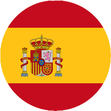

Gymnasium am Rittersberg
Ludwigstraße 20, 67657 Kaiserslautern
Ludwigstraße 20, 67657 Kaiserslautern

Auch die Spanische Sprache kann an unserer Schule als dritte Fremdsprache gewählt und erlernt werden.
Genau wie in Französisch, Englisch und Latein lernt ihr eine nützliche Sprache und verbessert durch
den Unterricht eure allgemeinen Sprachkentnisse. Die Spanische Sprache ist auf der Welt häufig aufzufinden
und kann auch bei Sprachen wie Portugiesisch, Italienisch und Brazilianisch helfen.
Zudem gibt es viele Länder mit Spanisch als Muttersprace, einige Beispiele: